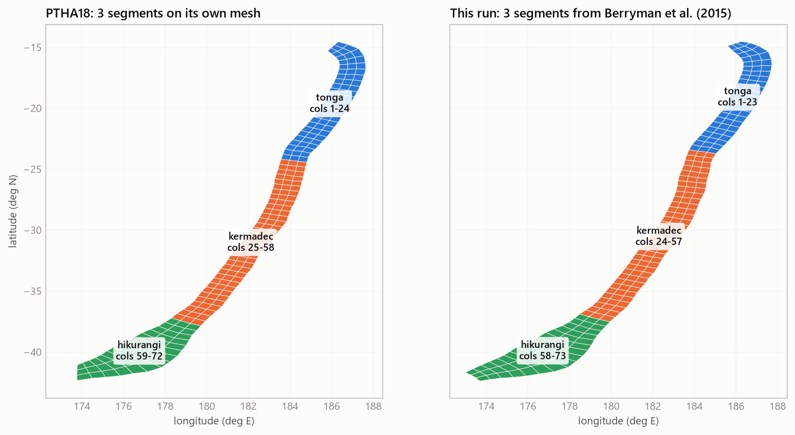
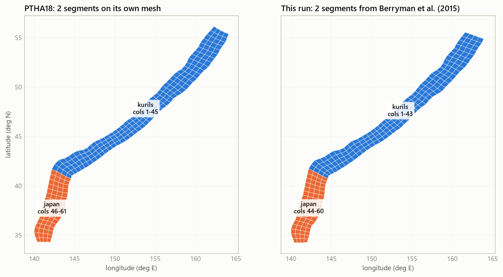

Segmented vs unsegmented (LEVEL 0)
A subduction zone can be modelled as one long fault that may break from end to end (unsegmented), or as several stretches that each break on their own (segmented). PTHA18 does not choose: on its large zones it gives each model half the weight. v9 does the same with --segmented true, with PTHA18's method and public data only. This page is the whole story in one place: what it is, how to run it, what it changes, how it compares with PTHA18 and what is checked.
--segmented true; without it one unsegmented zoneWhat segmentation is
Why it matters: several shorter faults produce more moderate earthquakes than one long one, but none of them is long enough for the largest ruptures, because each segment's largest possible earthquake is set by its own size. So segmenting usually raises the rate of moderate magnitudes and lowers the rate of the largest ones. How much depends on how long the segments are and how fast each converges.
Unsegmented or segmented: what changes
| Unsegmented (default) | Segmented (--segmented true) | |
|---|---|---|
| Models run | the zone, weight 1 | the zone (0.5) and every segment (0.5 each, summed) |
| Segment boundaries | none | Berryman et al. (2015) Table 3.1's segment end points (public, the default), or Bird (2003)'s plate pairs with --segment-boundaries bird; never PTHA18's table |
| Step 5 (GCMT) | the zone's catalogue | also one catalogue per segment, PTHA18's rule on its own cells |
| Step 6 (input) | "segments": {} | a segments block: columns, GCMT events, each segment's own Berryman row |
| Step 7 (engine) | 32,000 branches | 32,000 branches for the zone and for every segment; the zone's scenario rates |
| Step 8 (official) | PTHA18's unsegmented branch | PTHA18's own segmented model |
| Step 9 (report) | v8's blocks, no LEVEL 0 section; a green box at the top says "UNSEGMENTED RUN" | an amber box at the top says "SEGMENTED RUN" and lists the segments; + the LEVEL 0 section (bar, map, tables, curves), three more series on the rate chart, whose band becomes the zone mix's (what changes on the page) |
| Run time (kermadectonga2) | about 2.5 min | about 4.5 min |
Only zones Berryman divides into segments can be segmented: kermadectonga2, kurilsjapan, izumariana, ryuku, sunda2, southamerica, alaskaaleutians, newhebrides2, solomon2, mexico, newguinea2, manus (berryman_params.ZONE_BERRYMAN_SEGMENTS). For any other zone (puysegur2, makran2, calabria2, caribbean2, ...) step 5 says "a single segment here", step 6 writes no segments and the run stays unsegmented.
How to run it
# unsegmented .venv/Scripts/python.exe from_scratch_v12/generate.py kermadec --zone kermadectonga2 --folder kermadectonga2_v9 --ptha false .venv/Scripts/python.exe kermadectonga2_v9/steps/step_total.py --skip-hs # segmented: the same zone, one more flag (step 8 then runs PTHA18's segmented model) .venv/Scripts/python.exe from_scratch_v12/generate.py kermadec --zone kermadectonga2 --folder kermadectonga2_v9seg --ptha false --segmented true .venv/Scripts/python.exe kermadectonga2_v9seg/steps/step_total.py --skip-hs # kurilsjapan: steps 1-3 first (step 3 flags the Izu-Bonin tail), then the clipped run; both folders the same way .venv/Scripts/python.exe from_scratch_v12/generate.py kuril --zone kurilsjapan --folder kurilsjapan_v9seg --ptha false --segmented true .venv/Scripts/python.exe kurilsjapan_v9seg/steps/step1_fetch_slab2.py .venv/Scripts/python.exe kurilsjapan_v9seg/steps/step2_build_grid.py .venv/Scripts/python.exe kurilsjapan_v9seg/steps/step3_convergence.py .venv/Scripts/python.exe kurilsjapan_v9seg/steps/step_total.py --skip-hs --auto-clip # only the official comparison again, after steps 1-7 .venv/Scripts/python.exe kermadectonga2_v9seg/steps/step8_official.py .venv/Scripts/python.exe kermadectonga2_v9seg/steps/step9_report.py
--auto-clip (why) before trusting the segments.Step 8 needs R with rptha, as for any official run (details). To compare the two models of one zone, run both folders; html/segmented_vs_unsegmented.html at the package root compares the four folders above.
How v9 builds a segment
The method is PTHA18's, checked line by line against rptha (compute_rates_all_sources.R, gcmt_subsetter.R) and against PTHA18's published results. A segment is a stretch of the zone, not a source of its own:
| A segment's ... | How (as in PTHA18) | Where |
|---|---|---|
| columns | the along-strike columns between the segment's two trench end points in Berryman's Table 3.1, each end point placed on the mesh's top edge (rptha's is_in_segment then selects them) | steps 5 and 6, lib/segmentation.py berryman_segments |
| scenarios | the zone's whole scenario table; each scenario's probability weighted by the part of it inside the segment | engine |
| area, mean dip, Mw max range | from its own cells | engine |
| convergence | area-weighted Bird convergence of its own cells (kermadectonga2: Tonga 172, Kermadec 94, Hikurangi 32, zone 99 mm/yr; PTHA18 168, 91, 30) | engine |
| GCMT events | the zone's rule on its own cells and unit sources; an event near a boundary counts in both neighbours | step 5 |
| coupling, Mw max observed | its own Berryman et al. (2015) row, the same row PTHA18 gives it; Mw max observed never below its own largest GCMT event | step 6, lib/berryman_params.py |
| b-value, edge multiplier | the zone's | step 6, engine |
| the zone's scenario rates | 0.5 x unsegmented + 0.5 x every segment, scenario by scenario; percentiles from PTHA18's partial-segmentation step | engine: scenario_rates_<zone>_source_zone.csv |
With --segment-boundaries bird a segment is instead a run of columns sharing a Bird plate pair, and takes the Berryman row(s) its plates name (BIRD_SEGMENT_TO_BERRYMAN: TO/PA to Tonga, KE/PA to Kermadec and Hikurangi, OK/PA to Kurile-Kamchatka, PA\OK to Japan, ...). More detail: LEVEL 0 in the engine.
Where the boundaries fall: Berryman, PTHA18 and Bird
Berryman et al. (2015) Table 3.1 gives, for every segment, the longitude and latitude of both ends of its trench (Appendix A: Left_E_LONG, Left_N_LAT, Right_E_LONG, Right_N_LAT). kermadectonga2's three:
| Berryman segment | plate pair | from | to | coupling min/pref/max | Mmax-min |
|---|---|---|---|---|---|
| Hikurangi | PA\HF | 175.503, 42.059°S | 179.838, 37.476°S | 0.4 / 0.54 / 0.7 | 8.0 |
| Kermadec | PA\KE | 179.838, 37.476°S | -174.985, 23.750°S | 0.2 / 0.3 / 0.75 | 8.1 |
| Tonga | PA\TO | -174.985, 23.750°S | -173.407, 14.584°S | 0.1 / 0.2 / 0.7 | 8.0 |
These are the segments PTHA18 used. Placed on PTHA18's own published meshes, the end points give PTHA18's boundary indices within 0 to 2 columns (validate_v9.py berryman_segments, 9 zones, 18 shared boundaries: 12 on the same column, 5 one column away, 1 two columns). Where the counts differ it is PTHA18's own choice on top of the table: it merged Patagonia North and South (southamerica) and four eastern Alaska segments, and added an Arakan segment to sunda2 that Table 3.1 does not have. v9 keeps Berryman's segments as published.
| zone | Berryman | PTHA18 | boundaries on PTHA18's mesh (Berryman vs PTHA18) | Bird |
|---|---|---|---|---|
| kermadectonga2 | 3 | 3 | 22 vs 24, 57 vs 58 | 2 (no Hikurangi) |
| kurilsjapan | 2 | 2 | 45 vs 45 | 2 after --auto-clip |
| izumariana | 2 | 2 | 26 vs 27 | 2 |
| ryuku | 2 | 2 | 13 vs 13 | 2 |
| newhebrides2 | 4 | 4 | 9, 20, 30 vs 9, 20, 29 | - |
| solomon2 | 3 | 3 | 19, 28 vs 19, 29 | - |
| sunda2 | 3 | 4 | 38, 67 vs 39, 67; PTHA18 adds Arakan | 4, 8 to 28 columns off |
| southamerica | 6 | 5 | 34, 60, 88, 137, all identical; PTHA18 merges Patagonia | 4 |
| alaskaaleutians | 6 | 3 | 29, 67 identical; PTHA18 merges the eastern four | 1 (no split) |
Berryman placed most segment ends where the plate pair changes (Appendix A), so Bird's plate pairs, the alternative --segment-boundaries bird, often land nearby. Bird misses a segment whose plate it does not have: Hikurangi's PA\HF is the forearc of Wallace et al. (2004), not a Bird plate, so Bird gives kermadectonga2 two segments. v9 used Bird until 2026-09-30, believing the table had names but no geography.


What it changes: two worked examples
The four folders kermadectonga2_v9, kermadectonga2_v9seg, kurilsjapan_v9, kurilsjapan_v9seg, each with its own step 8. Exceedance rate per year (earthquakes above each magnitude). "Segmented" is the zone's full LEVEL 0 answer.
| zone, Mw | this run unsegmented | this run segmented | change | PTHA18 unsegmented | PTHA18 segmented | change |
|---|---|---|---|---|---|---|
| kermadectonga2, 7.2 | 0.2251 | 0.2521 | +12% | 0.2246 | 0.2591 | +15% |
| kermadectonga2, 8.0 | 0.04025 | 0.04338 | +8% | 0.03975 | 0.04361 | +10% |
| kermadectonga2, 9.2 | 0.001266 | 0.000968 | -24% | 0.001104 | 0.000828 | -25% |
| kurilsjapan, 7.2 | 0.4623 | 0.4674 | +1% | 0.4652 | 0.4719 | +1% |
| kurilsjapan, 8.0 | 0.08593 | 0.08701 | +1% | 0.08498 | 0.08572 | +1% |
| kurilsjapan, 9.2 | 0.003483 | 0.003232 | -7% | 0.003467 | 0.003230 | -7% |
- Unsegmented, this run vs PTHA18: within 1% at Mw 7.2 on both zones (+0.2%, -0.6%).
- Segmenting changes both models alike: kermadectonga2 +12% / -24% here against PTHA18's +15% / -25%; kurilsjapan +1% / -7% in both. The zone's segmented answer is within 3% of PTHA18's up to Mw 8.4 on kermadectonga2 and within 3% everywhere on kurilsjapan.
- kurilsjapan: the same 2 segments and rows as PTHA18, the Japan segment collecting the same 8 earthquakes; each segment's rate within 2.3% of PTHA18's.
- kermadectonga2: the same 3 segments and rows. The gap left is at the largest magnitudes (+17% at Mw 9.2), where the unsegmented branch already differs by +15% (this run's mesh is 6% larger), and in Tonga (-15% at Mw 7.2), which has 3 GCMT events here against PTHA18's 4.
- With Bird's boundaries (
--segment-boundaries bird, before 2026-09-30) kermadectonga2's segmenting changed the answer by only +6% / -10%: Bird's single KE/PA segment, 50 columns, can host far larger ruptures than PTHA18's shorter Kermadec and Hikurangi.
Every difference between the two segmented columns is an input difference (the boundaries and what follows from them): with PTHA18's own inputs the engine reproduces PTHA18's segmented results exactly (below).
In the report
A segmented run's report.html has a LEVEL 0 section after the exceedance-rate curve: a bar of each model's segments along the trench, figures/segments_map.png (the maps above), a table per segmentation (columns, convergence, coupling, Mw max observed, GCMT events, rate at Mw 7.2), this run against PTHA18 for the unsegmented branch, the union and the mix at six magnitudes, and a chart of every segment, union and mix of both models. The main rate chart gains each segment, the union and the mix, and its band becomes the zone mix's. Every other block (step cards, TVD, edge fit, the comparison table) stays the unsegmented branch's. Block by block, with screenshots: Reading report.html: what changes on the page.
The run also writes report_unsegmented.html, the unsegmented branch alone, exactly as an unsegmented run's report shows it, so the two can be read side by side without a second run. A switch at the top of both pages (Segmented / Unsegmented only) links them (details).
| File | What it holds (segmented runs) |
|---|---|
outputs/rate_curves.csv | one column per segment, exceedance_rate_union_of_segments, exceedance_rate_source_zone (the mix) |
outputs/scenario_rates_<zone>_<segment>.csv | every segment's scenario rates, on the zone's scenario table |
outputs/exceedance_rate_percentiles_unsegmented.csv | the unsegmented branch's own band (the segmented run's exceedance_rate_percentiles.csv is the zone mix's); report_unsegmented.html is built on it |
outputs/scenario_rates_<zone>_source_zone.csv | every scenario's rate for the whole zone (what PTHA18 publishes as rate_annual*) |
data/gcmt/<zone>_gcmt_subset_<segment>.csv, segments.json | each segment's earthquakes |
outputs_official/ptha18_reference/official_segments.json | PTHA18's segments as step 8 ran them |
outputs/exceedance_rate_percentiles.csv | the whole zone's percentiles (the mix), no longer the unsegmented branch's |
outputs/logic_tree_summary.csv | 11 more rows per segment (..._<zone>_<segment>) |
outputs/exports/ | mesh_cells.csv and convergence_profile.csv with a segment column; scenario_rates_source_zone.csv (+ _official) |
figures/segments_map.png | the cells coloured by segment, PTHA18's beside this run's |
The complete list (61 more files on kermadectonga2): Files a segmented run adds.
What is checked
| Check | Compares | Result |
|---|---|---|
official_segments | the engine on PTHA18's segmented inputs vs PTHA18's tree of the zone and every segment, 7 zones | 28 trees, a within 1.2e-11 |
events_segmented | every scenario's rate and 5 percentiles on the same 7 zones vs PTHA18's published rate_annual* | 30,926 scenarios, mean within 1e-10, percentiles within 4e-10 |
gcmt | step 5's rule on PTHA18's mesh vs PTHA18's own list, 8 zones and 12 segments | identical lists |
berryman_segments | Berryman's end points placed on PTHA18's own mesh vs PTHA18's boundary indices, 9 zones | 18 shared boundaries within 2 columns (12 identical) |
segmentation | Bird's segments tile each example mesh; prints them beside PTHA18's | well formed |
test_segmentation.py | 20 tests: Table 3.1 end points chain and match their Whole Margin rows, Berryman's three kermadectonga2 segments, a segment beyond the mesh dropped, Bird tiling, PTHA18's rows, one PTHA18 segment tree | pass |
.venv/Scripts/python.exe from_scratch_v12/validation/validate_v9.py berryman_segments official_segments events_segmented segmentation
Details and every number: Validation, checks 5 and 6.
History
- 2026-09-29: LEVEL 0 added to v9 (Bird boundaries, per-segment GCMT, report section).
- 2026-09-30, audit against rptha: four method differences fixed. Segments took the zone's convergence; were a slice of the mesh (a rupture across a boundary had no rate); got each GCMT event in exactly one segment; took the zone's coupling. Segmented results made before this are wrong segment by segment. Step 8 of a segmented folder now runs PTHA18's segmented model.
- 2026-09-30, boundaries from Berryman: Table 3.1 does give every segment's trench end points (Appendix A), so the default boundaries are now Berryman's, the ones PTHA18 used, instead of Bird's plate pairs (
--segment-boundaries birdkeeps the old rule). kermadectonga2 gets PTHA18's three segments; kurilsjapan's Japan boundary moves two columns and gets PTHA18's 8 events. The report now states at the top whether the run is segmented. - 2026-09-30, zone values: coupling from Berryman's Whole Margin row, Mw max observed as the largest known earthquake (both segmented and unsegmented runs); see the README, "What v9 adds".